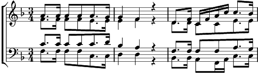

Deutsche Messe 8. Schlussgesang
Fa majeur
Paroles: Philippe Neumann
Musique: Franz Schubert
Arrangement: André Charlet

Herr, du hast mein Flehn vernommen, selig pocht's in meiner Brust;
in die Welt hinaus, ins Leben folgt mir nun des Himmels Lust.
Dort auch bist ja du mir nahe, überall und jederzeit,
allerorten ist dein Tempel, wo das Herz sich fromm dir weiht.
Segne, Herr, mich und die Meinen, segne unsern Lebensgang!
Alles, unser Tun und Wirken, sei ein frommer Lobgesang,